物理层
物理层是整个网络体系结构的基础，它直接对接传输介质，负责将数据以比特流的形式从一个设备传输到另一个设备。
物理层功能
物理层的核心功能是实现计算机与通信媒体的连接，并将上层（数据链路层）交付的帧转换成比特流，通过传输介质传输，同时接收对方的比特流并还原给上层。
- 数据传输的基本单位是比特（Bit），也就是 0 和 1。
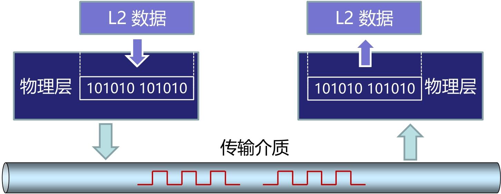
要解决的 7 个关键问题
要实现 “连接 + 比特传输”，物理层必须先解决以下 7 个核心问题 —— 从 “怎么连” 到 “怎么传” 的全流程
| 问题类型 | 核心含义 | 实例说明 |
|---|---|---|
| 线路配置 | 设备与传输介质的连接方式 | 点对点（电脑→路由器）、多点连接（多台电脑连到同一根总线） |
| 数据通信模式 | 数据传输的方向规则 | 单工（广播电台：只能听不能发）、半双工（对讲机：能互发但不能同时）、全双工（微信语音：同时说同时听） |
| 拓扑结构 | 多台设备的物理连接形态 | 星型（所有电脑连路由器）、总线型（早期以太网用一根同轴电缆连所有设备）、环型（老式令牌环网） |
| 信号 | 比特流的物理表现形式 | 电信号（双绞线传输：高电平代表 1，低电平代表 0）、光信号（光纤传输：亮代表 1，灭代表 0）、无线电信号（Wi-Fi 传输：特定频率波动代表 0 和 1） |
| 编码 | 0 和 1 与信号的对应规则 | 比如 “非归零编码”（NRZ）：持续高电平是 1，持续低电平是 0；“曼彻斯特编码”（后面会学）：电平跳变代表 0 或 1 |
| 接口 | 设备与传输介质的连接端口标准 | 电脑的 RJ45 网线接口、手机的 USB-C 接口、路由器的光纤接口 |
| 介质 | 选择哪种物理载体传输信号 | 家庭上网用双绞线，小区骨干网用光纤，户外监控用微波 |
这 7 个问题是层层递进的：先确定 “用什么介质”（介质）和 “设备怎么连”（线路配置 + 拓扑结构），再明确 “数据怎么传方向”（通信模式），最后解决 “0 和 1 怎么变成物理信号”（信号 + 编码）和 “设备端口怎么匹配”（接口）。
物理层的四大特性
为了让不同厂商的设备能通过物理层互通，必须对 “接口和传输规则” 进行标准化 —— 这就是物理层的四大特性，每个特性都对应一个具体的 “标准化维度”
- 机械特性：规定接口的物理结构，包括插头 / 插座的尺寸、引脚数量、引脚位置、线缆类型等。
- 电气特性：规定传输线上的电信号参数，包括电压范围、信号速率、阻抗匹配等
- 功能特性：规定接口每个引脚（或信号线）的具体功能，比如哪根线用于发送数据、哪根用于接收数据、哪根是接地线。
- 规程特性：规定数据传输的操作流程，包括建立连接、传输数据、断开连接的先后顺序，以及不同信号（如控制信号、数据信号）的交互规则。
传输介质
传输介质是计算机网络中数据传输的 “物理载体”，就像我们日常通信的 “道路”—— 没有道路，数据就无法从一台设备到达另一台设备。
- 信息是 “内容”，信号是 “载体”，传输介质是 “传输载体的通道”—— 三者的关系是：信息→编码成比特流→转换成信号→通过传输介质传输。
将传输介质分为导向传输媒体（有线介质） 和非导向传输媒体（无线介质），分类标准是 “信号是否有固定传播路径”
5 种核心类型，我们结合两大分类，逐一说明其归属和核心应用，帮大家建立 “分类 - 类型 - 场景” 的关联：
| 介质类型 | 归属分类 | 核心应用场景 |
|---|---|---|
| 双绞线 | 导向（有线） | 家庭上网、企业局域网、办公电脑连接路由器 / 交换机 |
| 同轴电缆 | 导向（有线） | 早期有线电视网、部分监控线路 |
| 光纤 | 导向（有线） | 骨干网（运营商机房之间）、数据中心高速连接、远距离传输 |
| 微波 | 非导向（无线） | 城域网骨干网、远距离点对点通信、5G 基站回传 |
| 红外 | 非导向（无线） | 短距离点对点通信、遥控设备 |
传输介质频谱
- 低频段（无线电波）→ 同轴电缆：波长 longer，绕射能力强（能绕过建筑物、地形），传输距离远，但速率低；
- 中高频段（微波）→ 无线介质（地面 / 卫星微波）（如微波、红外线、可见光）：波长 shorter，绕射能力弱（多为直线传播），传输距离近，但速率高、带宽大；
- 极高频段（可见光 / 近红外）→ 光纤：极高频信号速率极高，但在自由空间中易受干扰，且方向性极强，因此用光纤 “约束” 光信号传输（全反射），既减少衰减，又避免干扰。
- 超高频电磁波（如 X 射线、γ 射线）：波长极短，穿透能力强，但能量高、不易控制，不用于常规网络传输
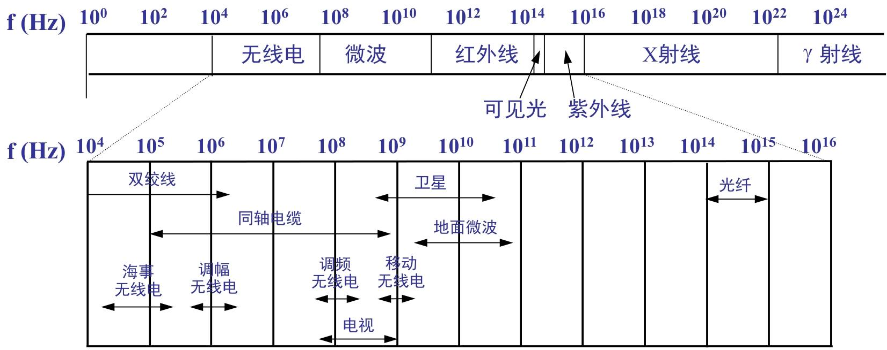
双绞线
双绞线是我们日常网络中最常用的传输介质 —— 家里上网的网线、机房里连接服务器的线缆，几乎都是双绞线。
双绞线是将两根单独的绝缘导线按照某种标准以互相缠绕的方式组成的一种配线。通过扭绞导线，一部分噪声信号沿一个方向传输（发送），而另一部分则沿反方向传输（接收），这种导线相互缠绕的形式可有效减少导线上的磁效应，并且来自外部的干扰信号会被导线的扭绞相互抵消。
与单根导线或非双绞水平排列的线对相比，双绞线减少了线对间的电磁辐射和相邻线对间的串扰，并有效抑制了来自外部的电磁干扰。
双绞线的核心区别在于 “是否有屏蔽层”，屏蔽层的作用是减少电磁干扰（EMI）和射频干扰（RFI）
| 类型简称 | 英文全称 | 核心结构特点 | 优缺点 | 适用场景 |
|---|---|---|---|---|
| UTP | Unshielded Twisted Pair（非屏蔽双绞线） | 无金属屏蔽层，仅 8 根铜芯线绞合 + 塑料外皮 | 优点：成本低、重量轻、安装方便（可弯曲）；缺点：抗干扰能力弱 | 家庭上网、办公局域网、普通机房（无强干扰环境）—— 日常最常用 |
| STP | Shielded Twisted Pair（屏蔽双绞线） | 每对双绞线外有金属屏蔽层（如铝箔），整体再包外皮 | 优点：抗干扰能力强（屏蔽层阻挡外部干扰）；缺点：成本高、安装复杂（屏蔽层需接地，否则反而引入干扰） | 工业环境（如工厂机床旁，强电磁干扰）、涉密机房（需要防信号泄露） |
| S/UTP | Screened/Unshielded Twisted Pair（总屏蔽非屏蔽双绞线） | 无单对屏蔽，仅整束双绞线外有一层总屏蔽层 | 优点：抗干扰能力介于 UTP 和 STP 之间，成本比 STP 低；缺点：对单对线缆的干扰防护不足 | 对干扰有一定要求，但预算有限的场景（如小型企业机房） |
| S/STP | Screened/Shielded Twisted Pair（总屏蔽屏蔽双绞线） | 每对双绞线有独立屏蔽层，整束外还有一层总屏蔽层（双重屏蔽） | 优点：抗干扰能力最强，信号保密性好；缺点：成本最高、重量最重、安装难度大 | 强干扰 + 高保密场景（如军事通信、大型数据中心核心区域） |
568A 和 568B 是双绞线的两种线序规范 ——线序的作用是保证发送端和接收端的信号对应，避免交叉错乱。即设备的 “发送引脚（TX）” 必须对应另一设备的 “接收引脚（RX）”
| 线对（Pair） | 568A 标准（线色→引脚） | 568B 标准（线色→引脚） | 关键用途（百兆网） |
|---|---|---|---|
| 1（白蓝 - 蓝） | 白蓝→5，蓝→4 | 白蓝→5，蓝→4 | 闲置（或用于以太网供电） |
| 2（白橙 - 橙） | 白橙→3，橙→6 | 白橙→1，橙→2 | 568A 中是接收（RX），568B 中是发送（TX） |
| 3（白绿 - 绿） | 白绿→1，绿→2 | 白绿→3，绿→6 | 568A 中是发送（TX），568B 中是接收（RX） |
| 4（白棕 - 棕） | 白棕→7，棕→8 | 白棕→7，棕→8 | 闲置（或用于以太网供电） |
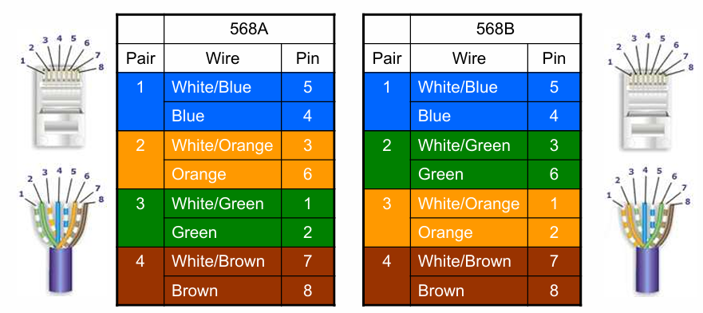
仅 2、3 线对的引脚位置互换
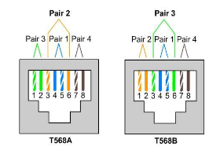
双绞线连接器（RJ45/8P8C）
常说的 “网线插头”，正式名称是8P8C 连接器，俗称 RJ45
- 8P：8 个 Position（位置）—— 连接器内部有 8 个引脚槽位；
- 8C：8 个 Contact（触点）—— 每个槽位对应一个金属触点，插入网线后与铜芯线接触导电。
[!tip]
- 百兆以太网（100BASE-TX）：仅使用 1、2、3、6 四根引脚（对应 2 对线），其余 4 根（4、5、7、8）闲置或用于 PoE（以太网供电，如给监控摄像头、无线 AP 供电）；
- 信号传输方式：差分信号——1、2 引脚发送差分信号（TX+、TX-），3、6 引脚接收差分信号（RX+、RX-）；差分信号的优势是 “抗干扰”—— 外界干扰对两根线的影响相同，接收端可通过减法抵消干扰，保证信号稳定。
- 千兆以太网（1000BASE-T）或以太网供电（PoE）：使用全部 4 对线（8 根引脚），每对都承担发送 / 接收任务，实现高速传输或供电。
直连线和交叉线的本质是 “两端线序是否相同”，核心用途是 “匹配不同设备的 TX/RX 引脚”：
- 直连线：两端线序完全相同 ，同为 568A 或 同为 568B（日常优先用 568B）
- 交叉线：两端线序不同 ，一端 568A + 另一端 568B
双绞线参数：传输速率 = lanes（每方向通道数）× bits per hertz（每赫兹比特数）× spectral bandwidth（频谱带宽）
其中100BaseT则T表示双绞线
同轴电缆
内层导体与外层网格导线 “同轴心”，能让电信号的电场和磁场集中在两者之间，减少信号辐射（泄露）和外界干扰
同轴电缆通过无线电波管制（RG）级别分类
同轴电缆的两种类型：细缆（10Base2）与粗缆（10Base5）
- “10”：代表传输速率为 10Mbps（早期以太网的主流速率）；
- “Base”：代表 “基带传输”（直接传输数字信号，无需调制，区别于射频等宽带传输）；
- “2”/“5”：代表最大传输距离（单位：100 米）——10Base2 最大距离 200 米，10Base5 最大距离 500 米
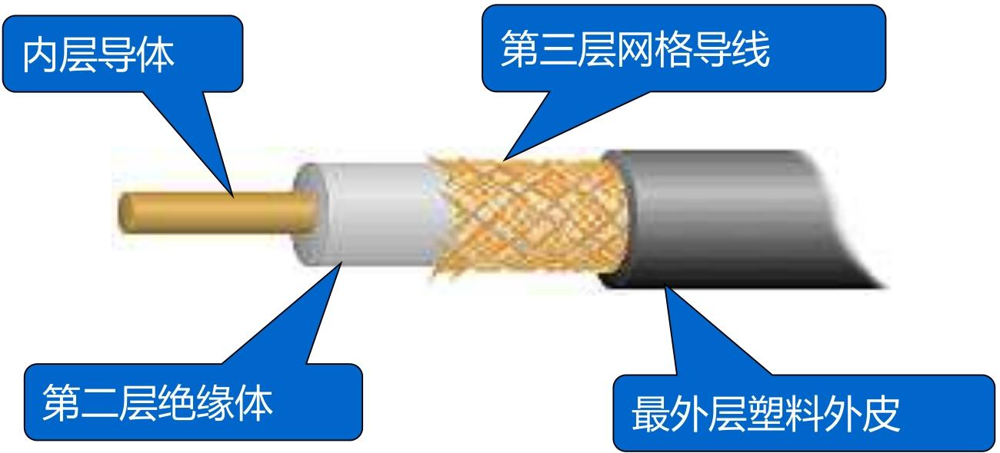
光纤
光纤 —— 这种目前传输速率最快、抗干扰能力最强的导向传输介质，也是现代通信骨干网的核心载体。
结构上，光纤的结构包括 “纤芯、包层、填充材料、保护层”
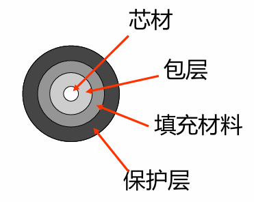
“光线在纤芯中传输的方式是不断地全反射”
- 核心前提：折射率差（n₁ > n₂）
- 光从光密介质（高折射率 n₁）射向光疏介质（低折射率 n₂）（即从纤芯→包层）；
- 入射光线与界面的入射角 ≥ 临界角（临界角由 n₁和 n₂决定，公式：sinθ 临界 = n₂/n₁）。
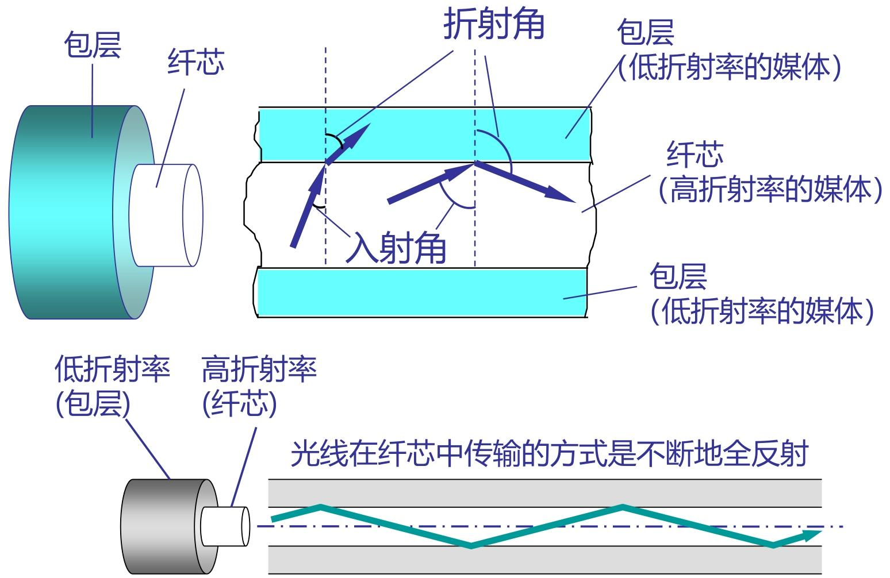
优点：抗干扰，传输速率高、距离长； 缺点：价格贵，安装维护困难，费用高
规格：单模光纤（SMF）与多模光纤（MMF）
光学上把具有一定频率、一定的偏振状态和传播方向的光波称做光波的一种模式。
- 只允许传输一个模式光波的光导纤维称为单模光导纤维
- 允许同时传输多个模式光波的光导纤维称为多模光导纤维。
光缆组件与光电转换设备（光纤通信的配套核心）
- 光纤本身无法直接传输电信号（计算机处理的是电信号），且单根光纤易损坏，因此需要 “光缆组件” 和 “光电转换设备” 配合使用：
- 其中光缆组件：将多根光纤（如 12 芯、24 芯）封装在一起，加上保护层、加强芯（如钢丝），形成 “光缆”
- 光电转换设备（核心：电→光、光→电转换）
- 传输：发光二极管(LED)或注入激光二极管(ILD)
- 接收：光敏元件或光敏二极管
无线传输介质
微波通信、卫星通信，以及无线局域网（WLAN）的核心组件。
这三类技术是无线通信的基石：
- 微波通信解决 “地面中远距离高速传输”
- 卫星通信解决 “广覆盖（跨洋、偏远地区）传输”
- WLAN 组件则是我们日常 Wi-Fi 上网的硬件基础。
物理层接口
明确 “谁连谁（DTE/DCE）”+“怎么连（EIA-232 标准）”
DTE 与 DCE
物理层接口的本质是DTE 与 DCE 的连接，两者是 “终端 - 中转” 的关系：
| 设备类型 | 核心定位 | 功能 | 典型实例 |
|---|---|---|---|
| DTE（数据终端设备） | 数据的 “产生 / 使用者” | 具备数据处理能力，能收发数据，但不直接连网络 | 电脑、服务器、路由器（终端侧） |
| DCE（数据电路终接设备） | 数据的 “中转 / 转换器” | 连接网络，将 DTE 的数字信号转成适合网络传输的信号（如模拟信号） | 调制解调器（Modem）、光猫、交换机（中心侧） |
其中DTE和DCE的连接称为DTE—DCE接口；DTE-DCE 接口上同时传输 “数据信息”（如文件内容）和 “控制信息”（如 “请求发送”）；
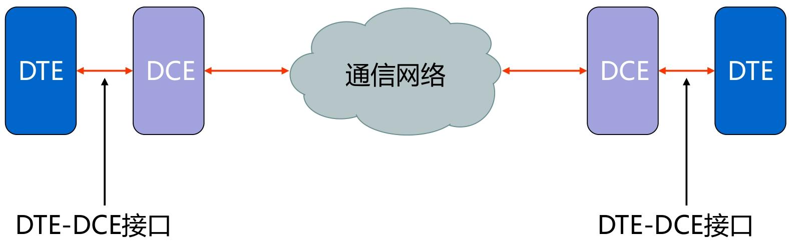
下面有两种常见的接口标准
双绞线连接器（RJ45/8P8C）
和上述双绞线的描述一致，
常说的 “网线插头”，正式名称是8P8C 连接器，俗称 RJ45
EIA-232 接口标准
EIA-232 是最经典的 DTE-DCE 接口标准（早期称 RS-232），通过四大特性定义连接规则：
机械特性：接口的 “物理形态”
采用DB25 连接器（25 针），实际常用简化的 9 针连接器（子集）；
- 引脚功能分类：数据（4 针）、控制（11 针）、定时（3 针）、其他（7 针）；
- 限制：电缆长度≤25 米（超过则信号衰减严重）；
- 接口类型：DTE 端用阳型（针式），DCE 端用阴型（孔式）。
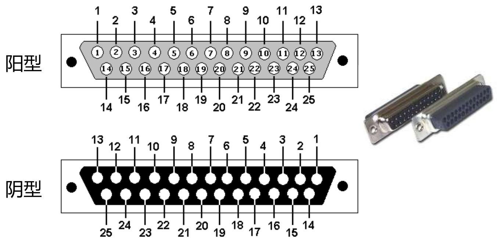
- 电气特性：信号的 “电压规则”
定义 0/1 和控制信号的电压对应关系（电压范围：-15V~+15V）：
- 数据信号（NRZ-L 编码）
- 逻辑 0 → 正电平（+3V~+15V）；→ “开”
- 逻辑 1 → 负电平（-15V~-3V）；→ “关”
- 注意：±3V 是 “无效区域”，避免信号波动导致误判。
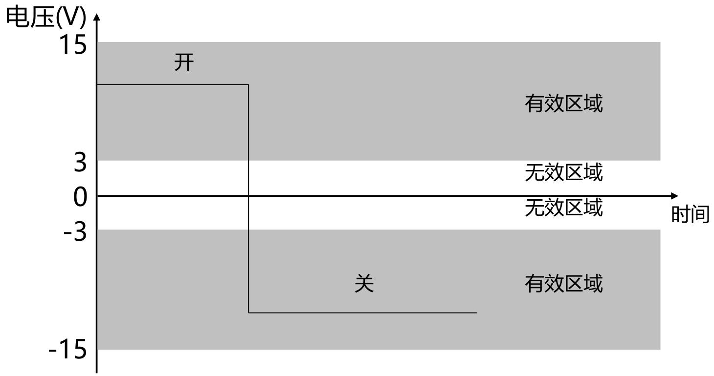
- 功能特性：引脚的 “用途定义”
| 引脚号 | 功能 | 方向 | 说明 |
|---|---|---|---|
| 2 | 发送数据（TD） | DTE→DCE | DTE 向 DCE 传数据 |
| 3 | 接收数据（RD） | DCE→DTE | DTE 从 DCE 收数据 |
| 4 | 请求发送（RTS） | DTE→DCE | DTE 请求发送权限 |
| 5 | 清除待发（CTS） | DCE→DTE | DCE 允许 DTE 发送 |
| 7 | 信号地（SG） | 参考电平 | 所有信号的电压基准 |
| 8 | 数据载波检测（CD） | DCE→DTE | DCE 成功接收网络信号 |
| 20 | DTE 准备好（DTR） | DTE→DCE | DTE 已就绪 |
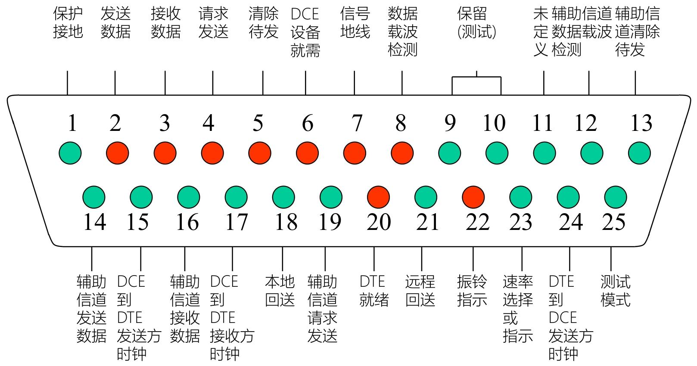
- 规程特性：通信的 “流程步骤”
定义同步全双工通信的操作流程（以 Modem 拨号为例）：
- 准备：DTE（电脑）和 DCE（Modem）通电，引脚 20（DTR）置 “开”；
- 就绪：DCE（Modem）完成初始化，引脚 6（DSR）置 “开”；
- 建立：DTE 发 RTS（引脚 4）→ DCE 回 CTS（引脚 5）→ 网络载波建立（引脚 8 置 “开”）；
- 数据传输：DTE 通过引脚 2 发数据，DCE 通过引脚 3 收数据；
- 清除：传输完成，DTE 置 DTR “关”→ DCE 置 DSR “关”→ 载波断开。
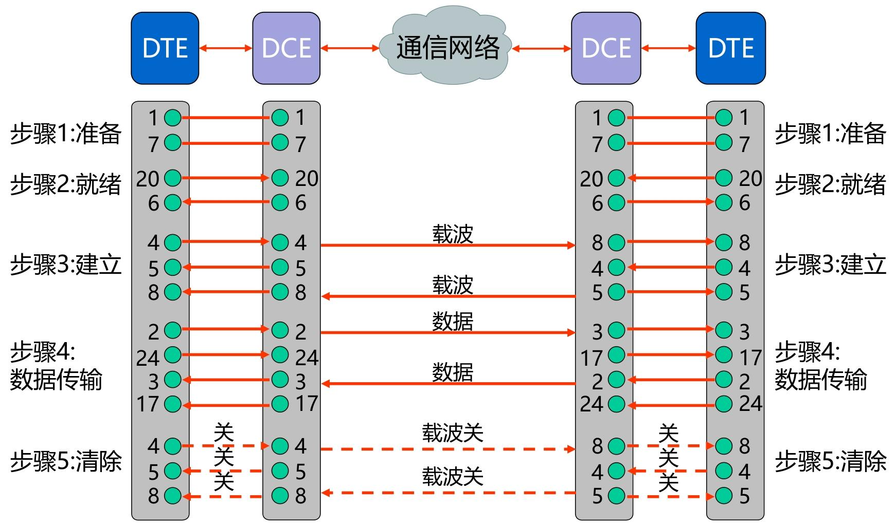
同时采用RS-232异步串行传输；每个数据包含有7或8 bit数据位、1bit起始位，1bit停止位，1bit校验位
EIA-232 子集：实际常用的简化接口
多数场景不需要 25 针的全部功能，因此常用9 针子集（异步串行通信），仅保留核心引脚：
- 保留引脚：2（TD）、3（RD）、4（RTS）、5（CTS）、6（DSR）、7（SG）、8（CD）、20（DTR）、22（RI）；
物理层互联设备
工作在物理层的设备，仅处理电气信号（不理解上层数据，如帧、数据包），核心作用是扩展网络覆盖范围，包括中继器和集线器。
中继器（Repeater）
- 信号处理：接收传输介质上衰减、失真的信号，重新生成原始的二进制比特形式（不是简单放大，而是 “再生”），再转发以补偿信号衰减；
- 网络扩展：连接两个相同物理层协议的网段，使它们成为一个逻辑网络
- 只能连接相同物理层协议、相同 MAC 协议的网段
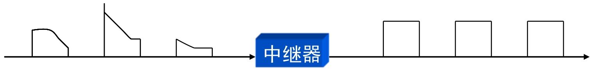
集线器（Hub）
- 是多端口的中继器（也叫 “多口中继器”），提供多个接口（如 8 口、16 口）连接多台设备；
- 工作机制：某一端口收到信号后，放大并广播到所有其他端口（所有设备共享同一传输介质）；
[!tip]
- 中继器：放大 / 再生信号，扩展传输距离；解决 “单段介质传输距离短” 的问题，实现网段扩展；
- 集线器：多端口中继器，连接多台设备；解决 “多设备连接” 的问题，但因性能缺陷（冲突、带宽共享），已被数据链路层的二层交换机取代
总结
[!note]
- 物理层是分层体系结构中的最底层：只负责 “底层比特传输”，不参与上层数据的封装、纠错等复杂处理
- 通过传输介质和互连设备搭建可靠的数据传输的物理基础，并为上层提供透明服务
- 规定了机械（物理）、电气（信号）、功能（引脚）、规程（流程） 4 个特性